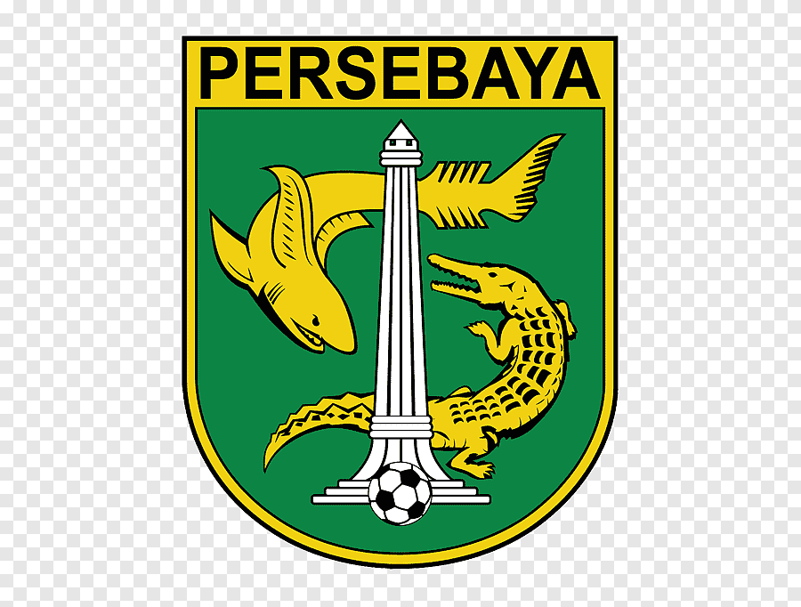
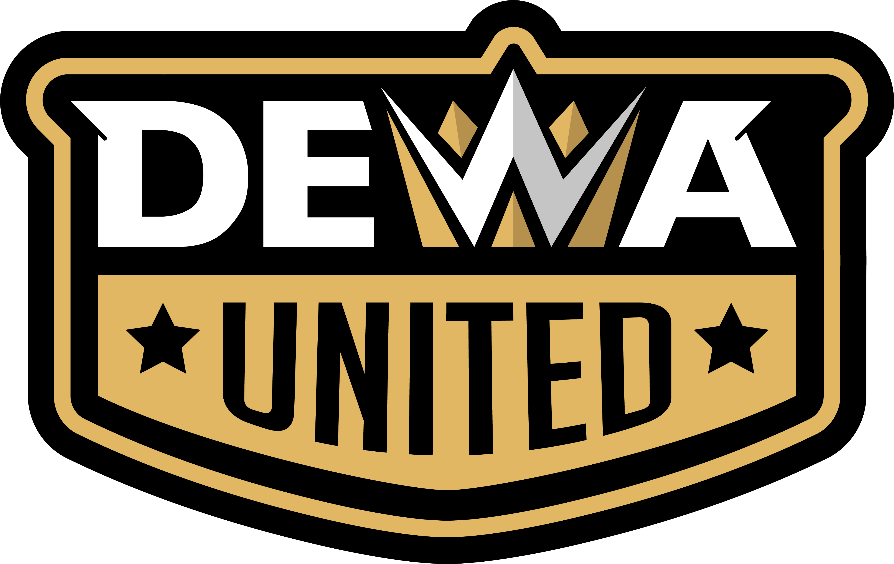

.jpg)
PERSIB adalah klub sepak bola Indonesia yang berbasis di Kota Bandung, Jawa Barat, dan saat ini merupakan peserta dari kompetisi tertinggi Indonesia, Liga 1. Cikal bakal PERSIB adalah Bandoeng Inlandsche Voetbal Bond (BIVB) yang didirikan pada 05 Januari 1919. BIVB kala itu dibentuk sebagai perserikatan klub-klub sepakbola bumi putera pertama di Bandung. Pada 19 April 1930, BIVB tercatat sebagai salah satu dari tujuh klub yang membidani lahirnya PSSI (Persatuan Sepakbola Seluruh Indonesia). Sebagai bagian dari alat perjuangan kemerdekaan Republik Indonesia, BIVB pun mengalami beberapa transformasi dan perubahan nama. Huruf "I" yang semula Indlansche menjadi Indonesische, lalu menjadi Perserikatan Sepakraga Indonesia Bandung (PSIB), hingga melakukan fusi bersama NVB (National Voetball Bond) dan berubah nama menjadi PERSIB pada 18 Maret 1934. Sejak 9 September 2009, PERSIB kembali bertransformasi dan menjadi klub profesional di bawah pengelolaan PT PERSIB Bandung Bermartabat. Unduh dan baca selengkapnya terkait Hari Jadi PERSIB 05 Januari 1919 dalam Naskah Akademik berikut.
KLASEMEN SEMENTARA 2024/2025
| Pos | Club | T | M | S | K | GM | GK | SG | Poin |
| 1 | PERSIB BANDUNG |
19 | 11 | 7 | 1 | 31 | 15 | 16 | 43 |
| 2 | PERSIJA JAKARTA |
19 | 11 | 4 | 4 | 30 | 18 | 12 | 37 |
| 3 | PERSEBAYA  | 19 | 11 | 4 | 4 | 23 | 18 | 5 | 37 |
| 4 | DEWA UNITED  | 19 | 8 | 7 | 4 | 34 | 20 | 14 | 31 |
| 5 | PSM MAKASAR |
19 | 7 | 10 | 2 | 25 | 16 | 9 | 31 |
PEMAIN CLUB .jpeg)